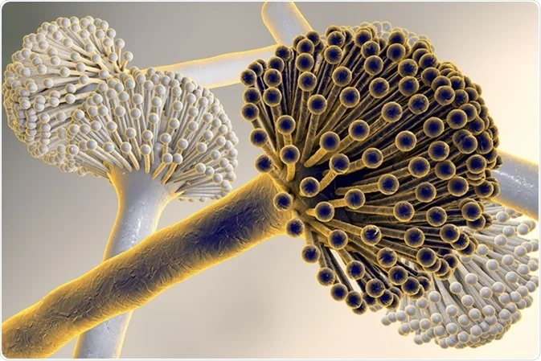

MICROBE OF THE MONTH

Aspergillus niger
Aspergillus niger is a filamentous ascomycete fungus that is ubiquitous in the environment and has been
implicated in opportunistic infections of humans . A. niger is most widely known for its role as a
citric acid producer.
The mycelium of A. niger is composed of hyphae, which are filamentous structures that grow by apical
extension. The conidiophores, which bear the conidia, are typically long and arise from the mycelium.
The black pigmentation of the conidia gives A. niger its characteristic colour. A. niger is ubiquitous
in nature, found in soil, air, and decomposing organic material.
Currently, the genomes of three different strains of A. niger have been sequenced . Two of the strains sequenced, NRRL 3 (ATCC 9029, CBS 120.49, N400) and ATCC 1015 (NRRL 328, CBS 113.46) are wildtype strains, while the other strain CBS 513.88, a derivative of NRRL 3122 (ATCC 22343, CBS 115989) was isolated after mutagenesis and selection for improved glucoamylase production. Most recently, in 2005, the genome of A. niger ATCC 1015, a wildtype, historic strain was used in research that resulted in the first patented citric acid process.
Aspergillus niger is the most commonly used industrial Aspergillus species for the production of pharmaceuticals, food ingredients, and enzymes. It is one of the most important fungi used worldwide for biotechnological applications. A. niger is known for its capacity to produce a broad range of enzymes related to the degradation of plant polysaccharides, such as cellulose, xylan, xyloglucan, galactomannan, and pectin.
Genetic Makeup
Currently, the genomes of three different strains of A. niger have been sequenced . Two of the strains sequenced, NRRL 3 (ATCC 9029, CBS 120.49, N400) and ATCC 1015 (NRRL 328, CBS 113.46) are wildtype strains, while the other strain CBS 513.88, a derivative of NRRL 3122 (ATCC 22343, CBS 115989) was isolated after mutagenesis and selection for improved glucoamylase production. Most recently, in 2005, the genome of A. niger ATCC 1015, a wildtype, historic strain was used in research that resulted in the first patented citric acid process.
Biotechnological and Industrial
Aspergillus niger is the most commonly used industrial Aspergillus species for the production of pharmaceuticals, food ingredients, and enzymes. It is one of the most important fungi used worldwide for biotechnological applications. A. niger is known for its capacity to produce a broad range of enzymes related to the degradation of plant polysaccharides, such as cellulose, xylan, xyloglucan, galactomannan, and pectin.
- Enzyme Production:- Aspergillus niger ASP2 strain was isolated from date by-product and demonstrated the production of extracellular enzymes such as amylase, cellulase, and lipase. A. niger ASP2 strain isolated from date paste showed the high production rate of enzymes like amylase, cellulase, and lipase in plate agar medium.(Taken from “Characterization and optimization of extracellular enzymes production by Aspergillus niger strains isolated from date by-products”
- Removal of heavy metals using Aspergillus niger:- Removal of excesses of heavy metal ions from wastewaters is essential due to their extreme toxicity towards aquatic life and humans. The uptake of heavy metal ions can take place by entrapment in the cellular structure and subsequent sorption onto the binding sites present in the cellular structure. This method of uptake is independent of the biological metabolic cycle and is known as “biosorption” or “passive uptake”. To test this ability, an experiment was conducted on strain obtained from American Type Culture Collection (ATCC) Rockville, MD, USA as ATCC strain #11414. This species is also used in the production of citric acid. It was found out that the biosorption of lead, cadmium and copper on pretreated A. niger was approximately 320%, 260% and 350% times higher than the comparable biosorption by live biomass.
- Organic Acid Production:- Aspergillus niger is renowned for its ability to produce organic acids, particularly citric acid, which is one of the most important organic acids used globally. Citric acid is the most significant product derived from A. niger. It is used as an acidulant, preservative, and flavouring agent in the food and beverage industry. Citric acid also finds applications in pharmaceuticals and cosmetics.
- Platform for production of heterologous proteins:- Due to their capacity to secrete large quantities of proteins into the culture medium, Aspergillus species, and especially A. niger, are considered promising candidates for the development of large-scale heterologous protein production platforms